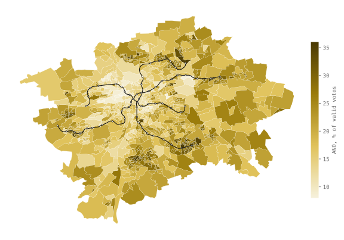
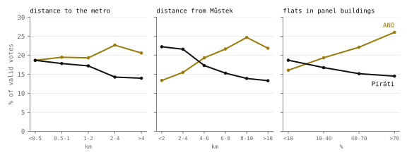
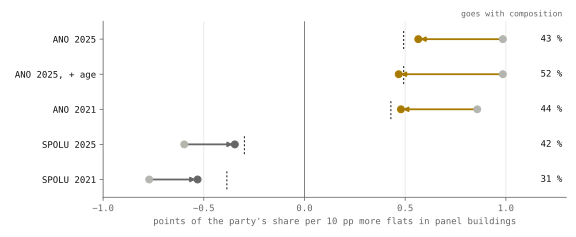
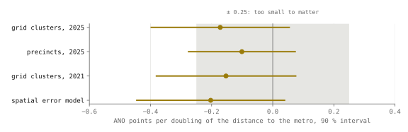
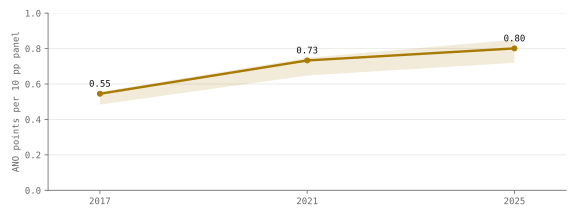
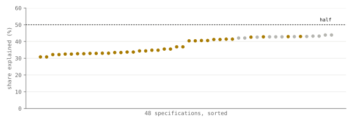

Research · Prague, measured, Part 2 · Chamber elections 2017–2025, 1 119 precincts
Why do Prague's housing estates vote ANO?
Education and citizenship explain 43 % of the rise in ANO's 2025 vote with the share of panel flats, short of the registered half (not supported); the gradient steepened after 2017 (supported).
- ANO, precincts where more than seven in ten flats are in panel buildings
- 26 % 16 % where fewer than one in ten are · flats counted from the cadastre
- ANO's estate gradient (pp of vote per 10 pp more panel flats, other measures held equal) explained by education and citizenship, the registered test
- 43 % range 31–44 % over 48 specifications
- ANO's estate gradient, 2017 → 2025
- 0.55 → 0.80 pp per 10 pp of panel flats · change +0.26 (unrounded 0.545 → 0.801), range +0.24 to +0.30
- the metro, per doubling of distance
- −0.17 pp 90 % CI −0.40 to +0.05 · not supported: inconclusive
Overwhelmed? Here's the short version
- ANO takes 26 % where most flats are in panel buildings and 16 % where few are, and does better further from the centre.
- Census education and citizenship account for 43 % of that gap: less than the registered half, and the remainder is significant with the registered bootstrap, though not with conventional or spatial errors. Adding age, which may over-control, gives 52 %.
- The one test that passes after correction for multiple tests: in older precincts the gap grew from 0.55 to 0.80 pp per 10 pp of panel flats between 2017 and 2025, which may partly reflect who moved in.
- The 43 % rests on 1 km census squares, 282 clusters in 56 districts; finer census data showing a much larger composition share would overturn it. The steepening uses no census data and rests on 819 matched precincts in 49 districts.
- The metro test is inconclusive, the two turnout tests are uninformative, and nothing here describes how any resident votes.
Photo: ŠJů · CC BY-SA 3.0, toned

Housing stock or residents
In the Chamber election of 3–4 October 2025 Prague voted SPOLU 33.9 %, ANO 19.9 %, the Pirates 16.9 % and STAN 13.4 %, on a turnout of 71.4 %1, and across the city's 1 119 precincts ANO did best in the panel housing estates. Part 1 of this series followed the city council's votes; this part follows the voters. A panel estate is both a housing stock and a population: people who were allocated flats there in the 1970s and 1980s and grew old in them, their children, and later buyers of the cheapest flats in the city. ANO may do better in the estates because of the estates themselves (their distance, their shops, their neighbours) or because the estates hold more of the people who vote ANO anywhere. Electoral geography has argued about this for four decades, as context against composition23, and for immigration attitudes in large European cities the best recent panel evidence finds that most of what looks like place is people4. Aggregate data cannot settle the question for individuals56, but they can measure how much of the estate gradient (the points ANO gains for every 10 percentage points more flats in panel buildings, other measures held equal) is left once what the census knows about their residents is held equal. Prague adds a post-socialist case to that literature: its estates were built by the state and their flats allocated administratively rather than through a housing market, and the cadastre records the construction of every residential building, so housing can be measured building by building. A follow-up study, its design written and reviewed before modelling, therefore adds the 2021 census and the elections of 2017 and 2021 to the 2025 precincts and asks four things: how much of ANO's estate gradient is explained by who lives in the estates, whether the metro's effect is small enough to be called negligible, whether the estates' vote has moved over eight years, and why turnout is lowest in the centre.
Data and the 2025 precinct map

ANO's share rises with distance from the centre, from 13 % within two kilometres of Můstek to 25 % between eight and ten, then falls back to 22 % beyond ten, where the estates give way to family houses and villages inside the city boundary. The Pirates run the other way, from 22 % in the centre to 13 % at the edge, while SPOLU, the largest party, moves least, from 37 % to 31 % and back to 34 %. Three measurements can be put on every precinct: how far its centre is from the nearest metro station, how far it is from Můstek, and what share of its flats are in panel buildings. Of the 735 755 flats in the precincts, 32 % are in panel buildings. Figure 2 lays the three side by side on one scale.
ANO's vote moves with the share of panel flats far more than with distance to the metro.

Near the metro or far from it, ANO's share stays between 19 and 23 %, and the small rise that exists comes with distance from the centre, because the stations thin out as the city does. Across the share of panel flats the change is much larger: where fewer than one flat in ten is in a panel building, ANO takes 16 % and SPOLU 37 %; where more than seven in ten are, ANO takes 26 % and SPOLU 29 %. A third of the city's flats are in panel buildings, so the gradient concerns a large part of the city rather than its margins.
In one regression weighted by valid votes, with the three measurements and the share of flats in family houses as a fourth, the metro's coefficient for ANO is −0.05 pp per doubling of the distance to the nearest station (95 % CI −0.28 to +0.19), which cannot be told from zero. Every ten percentage points of panel flats go with 0.9 pp more for ANO (0.8 to 1.0), and every doubling of the distance from Můstek with 2.0 more (1.5 to 2.4). The Pirates' share falls by 2.0 pp for every doubling of the distance from the centre and shows no measurable metro effect either. The model explains 56 % of the variation in ANO's share across precincts, and 54 % of the Pirates'. SPOLU loses 0.6 pp for every ten points of panel flats and gains 0.5 (0.4 to 0.7) for every ten points of flats in family houses, which is why it recovers beyond ten kilometres, in the villa quarters and villages of its outer ring. The smaller parties follow the three measurements only weakly, and for them the model explains 13–29 % of the variation. These 2025 estimates were known before the study below was designed.
The 2025 precinct counts add up to the Statistical Office's published result for Prague: 1 119 precincts, 898 829 registered voters, 632 938 valid votes, SPOLU 33.94 %, SPD 5.24 %1. Boundaries come from the cadastre's current register, which keeps only the latest version of each precinct7. Every record in it is dated after the election, most from two bulk updates in October and November 2025, and 22 were changed from December on; dropping those 22 moves no estimate by more than a tenth of a point. The metro stations come from the public-transport timetable8, which lacks Flora, closed for reconstruction since 2 February 20269, so the station is added back as it ran on election day. A building's construction type is recorded for 98 % of the flats, and "panel" here means the cadastre's wall panels, concrete included.
The census counts people on a grid of 1 km squares10. Prague's median precinct is an eighth of a square, so every cell's counts were spread over the precincts it overlaps, in proportion to the flats standing in each on census day, from the cadastre's building register. This dasymetric allocation11 puts 1 301 482 residents into Prague's precincts against the census's 1 301 432, and an independent allocation from the census's 958 basic settlement units in Prague agrees within 25 % for all but 13 precincts.
How this was done
The design fixes the questions, the hypotheses, the one test for each, the decision rules and fourteen robustness checks12. It was written and reviewed before modelling, but it first appears in the repository in the same commit as the results, so its timing is not independently timestamped. When it was written, the 2025 estimates above were known, and the author had worked with Prague's precinct and housing data since May 2024. The plan sets the analysis in advance; the author already knew the data. Because the 2025 estimates were known, the metro hypothesis is framed as a test of whether the absence of a measurable effect in 2025 holds up as a negligible effect. Everything that changed afterwards is listed below.
A precinct gets only the composition of the square it sits in, while its housing is measured building by building. Comparing the two at different resolutions would flatter housing, so the main models add precincts up into the square that holds most of their flats, which gives 282 clusters, each measured at one resolution. The regressions weight by valid votes. Uncertainty comes from a wild cluster bootstrap by city district, which resamples whole districts so that neighbouring precincts are not treated as independent1314, with conventional, small-sample-corrected15 and spatial16 standard errors computed alongside. Each cluster belongs to the district that holds most of its flats, and the 282 clusters fall in 56 of Prague's 57 districts, so the effective sample for the composition and metro tests is 56 groups rather than 282 observations; the steepening test uses 819 precincts in 49 districts and the turnout tests 250 clusters in 44. The six confirmatory tests share a 5 % error rate through Holm's procedure17, which tests the smallest p-value against the strictest threshold and loosens it step by step.
The registered hypotheses and their results
Seven hypotheses were registered. H1a checks that the census measure of education behaves as expected and sits outside the confirmatory family; of the six inside it, one is supported after Holm's correction, and the two turnout tests are uninformative. In the table, θ is the share of the estate gradient accounted for by the composition block; for H1b the design registered three outcomes in advance: composition (θ significantly above one half), place beyond composition (θ significantly below one half and the remaining gradient significantly above zero) and indeterminate (neither).
| Hypothesis | Test | Result |
|---|---|---|
| H1a · ANO does worse where more adults have a university or higher vocational degree check that the census measure works | coefficient < 0 | supported −0.33 pp per pp, p < 0.001 |
| H1b · education and citizenship explain more than half of ANO's estate gradient | θ > 0.5 | not supported; registered outcome "place beyond composition" θ = 0.43, p = 0.97; reverse test p = 0.03 |
| H1b′ · the same for SPOLU's (negative) estate gradient | θ > 0.5 | not supported; registered outcome indeterminate, reported as underpowered θ = 0.42, p = 0.91; reverse test p = 0.09 |
| H2 · the metro's effect on ANO is within ±0.25 pp per doubling of distance | equivalence (TOST: both ends of the 90 % interval inside ±0.25) | not supported: inconclusive p = 0.28 |
| H3 · ANO's estate gradient was steeper in 2025 than in 2017 | interaction > 0 | supported +0.26 pp per 10 pp, p < 0.001 |
| H4a · the centre's turnout gap is smaller counted against residents than against the register | |gradient| smaller | uninformative p = 0.80, sign reversed |
| H4b · registrants who are not residents add less than one voter each | elasticity < 1 (% rise in envelopes per 1 % rise in the register) | uninformative 0.99 ± 0.02, p = 0.37 |
p-values: one-sided, wild cluster bootstrap by district, 9 999 draws (56 districts for H1 and H2, 49 for H3, 44 for H4); H2 uses the largest of three standard errors. Holm thresholds run from 0.008 to 0.05; only H3 passes. H1a is outside the family. H4a and H4b were registered as tests of the register and were relabelled uninformative after estimation, because the published register count includes voting-pass voters; their p-values are shown as computed.
How much of the estate gradient is composition
Across the 282 clusters, ANO's share rises by 0.99 pp for every ten percentage points more flats in panel buildings, holding the distance from the centre, the distance to the metro and the share of family houses equal. Adding what the census knows about education and citizenship lowers the gradient to 0.56 pp (95 % CI 0.47 to 0.66, bootstrap by district), and the census block raises the share of variation explained from 70 % to 87 %.
Education and citizenship account for 43 % of ANO's estate gradient, short of the registered half.

A decomposition of the gap18 puts 0.44 of the 0.42 points on education and −0.02 on the share of foreign citizens, so education accounts for all of the fall. Of the gradient, 57 % survives. The test in the other direction, whether more than half is left, gives p = 0.03 with the registered bootstrap and 0.04 with small-sample-corrected errors, but 0.06 with conventional and with spatial errors. Under the registered rule this is the outcome "place beyond composition", but "place" here means only "not explained by education and citizenship": unmeasured income, tenure and length of residence could carry the remainder. For SPOLU the pattern is the same and weaker, with 42 % explained and neither direction significant, an indeterminate outcome that the design pre-committed to report as underpowered.
The census measures composition over a square kilometre, which is coarser than a street, and at registration this was expected to under-control for composition. The direction is not guaranteed here, because the census counts were spread over precincts in proportion to their flats, so the allocation error is correlated with the housing measure itself, and nothing here establishes its direction: 43 % may be understated or overstated. The registered block also leaves out age, because the estates' age structure is itself partly a product of the housing: flats were allocated to young families in one decade, and those families aged in place. With the share of over-65s and under-15s added, composition explains 52 %, about half, and the test can no longer tell the answer from one half. The 2021 election, a replication specified in the design, gives 44 % for ANO and 31 % for SPOLU.
Distance to the metro
The 2025 precinct model found no measurable effect of the metro on the vote, and an interval around zero does not show that an effect is absent, so the registered test asked the stronger question of whether the metro's effect, in the full model with composition, is small enough not to matter. The threshold was set at a quarter of a point per doubling of the distance to a station. Across the middle half of Prague's precincts that is half a point, a fortieth of ANO's vote in the city.
Every metro estimate is small, but every interval reaches past the margin, so the test cannot call the metro negligible.

Every estimate is small and every interval crosses zero, but every interval also reaches past −0.25. The design-stage power check, using a pessimistic residual variance, expected a standard error of about 0.31, above the margin, and so a test with almost no power. The realised standard error is 0.14, so the test could have passed with an estimate near zero. It does not, because the estimate itself, −0.17, lies close to the −0.25 margin and its 90 % interval reaches −0.40. The margin was not widened afterwards, because the 2025 estimate was already known and a margin chosen after seeing it would prove nothing. The test is therefore inconclusive, and the data lean towards ANO doing slightly better closer to stations once the rest is held equal, rather than towards no association.
ANO's estate gradient in 2017, 2021 and 2025
Precinct boundaries move between elections and the cadastre keeps only the current ones. The comparison over time therefore uses the 819 precincts that exist under the same number in 2017, 2021 and 2025 and whose register grew or shrank no more than 10 % beyond what new flats inside them predict. Matched precincts have more panel flats than the rest (40 % against 27 %), lie slightly further from the centre on average, and gave ANO more of their vote in 2025 (20.5 % against 18.2 %), because the unmatched are mostly where the city is still building, so the comparison describes the older city rather than all of it.
ANO's estate gradient steepened from 0.55 in 2017 to 0.80 in 2025.

Between 2017 and 2025 ANO's estate gradient grew by 0.26 pp per 10 pp of panel flats (p < 0.001), from 0.55 to 0.80 (0.545 and 0.801 unrounded), with 2021 in between. It is the one registered hypothesis that passes the family-wise threshold. It holds under the stricter and the looser matching rule (+0.24 and +0.30) and with weights that correct for which precincts could be matched (+0.26). The model holds housing fixed, applying today's housing stock to all three elections, but not people, since the census was taken once, between the elections, so the result shows that ANO's vote became more concentrated in the estates without showing whether the estates or their residents changed.
Turnout in the centre
The published register count per precinct includes voters who came with a voting pass, and passes are used most where people are away from home: in all 14 819 precincts in the file, abroad included, envelopes never exceed that count, which is what one would see if pass voters are added to it. This was found only after the data were joined, and because the published files do not allow the register and the pass voters to be separated, both turnout tests are uninformative. In 2025 turnout was lowest in the centre, 66.8 % within two kilometres of Můstek against about 73 % from four kilometres out, and it barely changed with the share of panel flats (71–72 % across the four groups). The registered explanation was that the centre has more voters who are registered there but live elsewhere, since Czech permanent residence is an address in a register and people with no address of their own are registered at the district office. With the 158 precincts that contain a district office19, a hospital20, a care home21 or a prison22 left out, turnout counted against the register rises by 1.9 pp per doubling of the distance from Můstek, while counted against the census's resident Czech adults it falls by 4.3, and envelopes scale with the register at an elasticity (the % rise in envelopes for a 1 % rise in the register) of 0.99, with residents adding nothing once the register is known. With the flagged precincts kept, as the design registered for reporting, the elasticity is 0.74 (p = 0.01), equally uninterpretable for the same reason. Both results go against the registration explanation, but with pass voters inside the register count neither can be read as a test of it.
Robustness checks
In all 48 specifications composition explains 31–44 % of the gradient, never half.

| Check | ANO θ | SPOLU θ | metro |
|---|
| Further check | Result |
|---|---|
| 48 specifications of the registered block (fig. 6) | ANO θ 31–44 % |
| leave one district out | θ moves by at most 0.02 |
| fractional logit, for shares between 0 and 123 | ANO θ 46 % |
| single precincts (composition coarser than housing) | ANO θ 30 % |
| spatial error model; residual Moran's I = 0.06 | same answers, Hausman test24 p = 0.62 |
| panel shares shuffled within districts | attenuation 0.19 pp, observed 0.42 |
Across the 48 specifications composition explains between 31 and 44 % of ANO's estate gradient under the registered block. Single precincts give a lower share because their composition is coarser than their housing, which inflates the leftover gradient by construction. Shuffling panel shares within districts leaves an apparent attenuation of 0.19 pp rather than zero, because districts differ in both housing and people, and the observed 0.42 lies outside that range.
What changed after registration
- 28 September 2026, design stage: the rule to publish only after the 2026 municipal elections was dropped. It concerned publication, not analysis.
- 28 September 2026, design stage: the power check found the metro test underpowered from the start. This was recorded then, and the margin was kept.
- 28 September 2026, operational details the design left open: only five-year age groups are published, so 15–17 year olds are estimated as three fifths of the 15–19 group; dormitories are not flagged, because no open list of them exists; the 2017 precinct geometry was not recovered from the cadastre's change files, so the registered matching rule is used alone.
- 28 September 2026, estimation: the wild cluster bootstrap is unrestricted rather than restricted as registered, because the composition contrast spans two regressions and has no standard restricted form. Small-sample-corrected (CR2) errors use a t(G − 1) reference instead of the registered Satterthwaite degrees of freedom. A coding error in H4a, which tested a signed rather than an absolute difference, was found and fixed before reporting.
- 28 September 2026, estimation: the placebo with the planned line D stations was not run, because official station coordinates could not be found in open data.
- 28 September 2026, estimation: the published register count was found to include voting-pass voters. It was first reported as a limitation of the turnout tests; on 29 September 2026 H4a and H4b were relabelled from "not supported" to "uninformative" for that reason.
- 29 September 2026: the claim that 43 % is a lower bound on what composition explains was withdrawn, because the allocation error is correlated with the housing measure; it now reads "likely understated". The bootstrap group count was corrected from 57 to 56 districts, the number the estimation actually used.
What this means
The results locate ANO's vote in the housing estates and measure how much of it goes with who lives there, without identifying any effect of the estates on anyone's vote. Measured are the votes, the housing and the distances: ANO takes 26 % where more than seven flats in ten are in panel buildings and 16 % where fewer than one in ten are. Inferred, from 1 km census squares, is the share of that gradient going with education and citizenship, 43 % under the registered block and 31–44 % across 48 specifications, with the direction of its error unknown, and about half once age is added. The rest cannot be credited to the estates as places, since income, tenure and length of residence are unmeasured. Between 2017 and 2025 the gradient rose by 0.26, from 0.545 to 0.801 pp per 10 pp of panel flats (+0.24 to +0.30 across matching rules), in the older, matched precincts; with residents not held fixed, it shows the vote concentrating in the estates without saying why. The metro's association, −0.17 pp per doubling of distance (90 % CI −0.40 to +0.05), is neither distinguishable from zero nor shown to be negligible, and the turnout tests are uninformative.
What this does not show
No result here says how any resident votes, because every measurement is of areas5. The census is from March 2021, four and a half years before the 2025 election, taken during distance teaching and before the refugees of 2022. The grid is coarse, which limits what composition can explain. The areas are Prague's, and a different grid would give somewhat different numbers25. The leftover estate gradient is what the census does not measure, and the place itself is only one candidate for it: income, tenure and how long people have lived there are not in the grid, and any of them could carry it. The steepening since 2017 describes the matched, older precincts, with residents' composition not held fixed over time. None of the estimates is a causal effect of living in a panel building.
Reproduction
The analysis runs from tools/praha/ in the site's repository. Each script's header gives its uv run command with its dependencies (pandas, numpy, scipy, statsmodels, shapely, pyproj, pyarrow, matplotlib); no lock file pins their versions yet. Raw downloads are cached in tools/data/praha2/ and tools/data/praha2x/, which are not committed, and the hashes of the files present at registration are in prague-rings-files.sha256. The scripts run in this order:
metro.py: the 2025 description and the map datarings_data.py: the design frame, before any result is joinedrings_power.py: the design-stage checksrings_extended.py: the registered tests, written toassets/praha/rings_extended.jsonrings_robust.py: the robustness checks, written toassets/praha/rings_robust.jsonfigures_metro.pyandfigures_rings_extended.py: the figures
References
- Český statistický úřad (2025). Open data, Chamber of Deputies elections 2017, 2021 and 2025: precinct results (pst4, pst4p), candidate registers and the published result for Prague. volby.gov.cz/opendata (index of all three elections); 2025: volby.gov.cz/opendata/ps2025. Accessed 28 September 2026.
- Agnew, J. (1987). Place and Politics: The Geographical Mediation of State and Society. Allen & Unwin.
- Johnston, R., Pattie, C. (2006). Putting Voters in their Place: Geography and Elections in Great Britain. Oxford University Press.
- Maxwell, R. (2019). Cosmopolitan immigration attitudes in large European cities: contextual or compositional effects? American Political Science Review 113(2), 456–474.
- Robinson, W. S. (1950). Ecological correlations and the behavior of individuals. American Sociological Review 15(3), 351–357.
- King, G. (1997). A Solution to the Ecological Inference Problem. Princeton University Press.
- ČÚZK (2026). RÚIAN map service: precinct polygons (Volební okrsek), building definition points (number of flats, construction type, use, completion date), basic settlement units and address points. ags.cuzk.gov.cz/arcgis/rest/services/RUIAN. Accessed 28 September 2026.
- Pražská integrovaná doprava (2026). PID GTFS: stops served by the three metro lines, and their shapes. Snapshot of 28 September 2026 (feed valid 28 September to 11 October 2026). data.pid.cz/PID_GTFS.zip. Accessed 28 September 2026.
- Dopravní podnik hl. m. Prahy (2026). Stanice metra Flora se kvůli kompletní rekonstrukci na deset měsíců zavírá. dpp.cz. Accessed 28 September 2026.
- Český statistický úřad (2021). Census 2021 on the 1 km grid (Gridy SLDB 2021, reference date 26 March 2021); usual residents by basic settlement unit; table SLD21A011, residents by citizenship and age. geodata.csu.gov.cz. Accessed 28 September 2026.
- Mennis, J. (2003). Generating surface models of population using dasymetric mapping. The Professional Geographer 55(1), 31–42.
- Šandová, B. (2026). Prague votes in rings: research design (Part 2, extended), with dated changes and design-stage checks. github.com/sandovabarbora/bsandova.com. Accessed 29 September 2026.
- Cameron, A. C., Gelbach, J. B., Miller, D. L. (2008). Bootstrap-based improvements for inference with clustered errors. Review of Economics and Statistics 90(3), 414–427.
- Webb, M. D. (2023). Reworking wild bootstrap-based inference for clustered errors. Canadian Journal of Economics 56(3), 839–858. doi:10.1111/caje.12661.
- Bell, R. M., McCaffrey, D. F. (2002). Bias reduction in standard errors for linear regression with multi-stage samples. Survey Methodology 28(2), 169–181.
- Conley, T. G. (1999). GMM estimation with cross sectional dependence. Journal of Econometrics 92(1), 1–45.
- Holm, S. (1979). A simple sequentially rejective multiple test procedure. Scandinavian Journal of Statistics 6(2), 65–70.
- Gelbach, J. B. (2016). When do covariates matter? And which ones, and how much? Journal of Labor Economics 34(2), 509–543.
- Seznam orgánů veřejné moci (2026). Register of public authorities, open-data export: the 57 Prague district offices (legal form 811) and their RÚIAN address points. seznam.gov.cz/ovm. Accessed 28 September 2026.
- ÚZIS ČR (2026). Národní registr poskytovatelů zdravotních služeb, dataset NR-01-06 (places of care): inpatient health sites. nrpzs.uzis.cz. Accessed 28 September 2026.
- Ministerstvo práce a sociálních věcí (2026). Registr poskytovatelů sociálních služeb: care homes for seniors, special-regime homes and homes for people with disabilities. iregistr.mpsv.cz. Accessed 28 September 2026.
- Vězeňská služba ČR (2026). Vazební věznice Praha-Pankrác and Praha-Ruzyně, organisational units. vs.gov.cz. Accessed 28 September 2026.
- Papke, L. E., Wooldridge, J. M. (1996). Econometric methods for fractional response variables with an application to 401(k) plan participation rates. Journal of Applied Econometrics 11(6), 619–632.
- Pace, R. K., LeSage, J. P. (2008). A spatial Hausman test. Economics Letters 101(3), 282–284.
- Openshaw, S. (1984). The Modifiable Areal Unit Problem. CATMOG 38, Geo Books.
Change log
- 6 October 2026: charts restyled with a takeaway line, notes at key points, labels at line ends and one colour per party or city; fig. 3's caption now describes the half-gradient mark as drawn in both the live and the static figure; numbers unchanged.
- 6 October 2026: retitled from "Housing estates and the 2025 vote in Prague's precincts" to a question; text and numbers unchanged.
- 28 September 2026: first published.
- 29 September 2026: version 2. Retitled from "Prague votes in rings, not along lines", which asserted a metro null the registered test could not establish; the kicker no longer says "pre-registered", the registration is described as "design written before modelling; not independently timestamped", and the earlier description of who reviewed the design is removed.
- 29 September 2026: corrected "never half", which holds only for the registered block without age; with age added composition explains 52 %. H4a and H4b relabelled from "not supported" to "uninformative". "43 % is a lower bound" changed to "likely understated". Bootstrap groups corrected from 57 to 56 districts (rings_extended.json, G = 56); the effective sample is now stated beside the headline, with 49 districts for H3 and 44 for H4, from the same file.
- 29 September 2026: cut the minor-party paragraph to one sentence (removed: the panel gradients of STAN and Stačilo!, the centre gradients of SPD and the Motorists, and SPD's metro interval, 0.02 to 0.17) and the uncited sentence on the metro as the city's spine. Merged the duplicated map description and question list; compressed the turnout section; moved the line D placebo to "What changed after registration"; added the contribution sentence, the further-checks table, the metadata block and the Reproduction section.
- 29 September 2026: references renumbered by first citation, with access and snapshot dates; the Part 1 reference replaced by a link. Series renumbered: the parking study is Part 5.
- 29 September 2026: added the section What this means.
- Checked against editorial standard v1 on 29 September 2026.
- 3 October 2026: after an audit, a minor revision within version 2 (the version-2 archive and PDF predate it); no number changed. Weakened: "43 % is likely understated" now says the direction of the error is unknown; the reason given for the inconclusive metro test is corrected (the realised standard error, 0.14, is below the margin; the test fails because the estimate, −0.17, lies near −0.25), and "a negligible effect cannot be told from a small one with 282 clusters" is withdrawn; the reverse composition test (p = 0.03) is now shown to be 0.06 with conventional and spatial errors. Added: the registered H1b outcome labels ("place beyond composition" for ANO, "indeterminate", reported as underpowered, for SPOLU), H4b with the flagged precincts kept (0.74, p = 0.01), matched precincts' ANO 2025 share (20.5 % against 18.2 %), the CR2 reference change, the use of today's housing stock in all three elections, unrounded 2017 and 2025 gradients (0.545, 0.801), numbers in the short version, glosses for technical terms, and separate references for the institution registers, the Webb pages and the 2017 and 2021 election data. Education's share of the fall now reads "all" (0.44 of 0.42) and citizenship −0.02 rather than "nothing".
- 5 October 2026: work dates added; the wording on the analysis plan corrected to match them. No number changed.